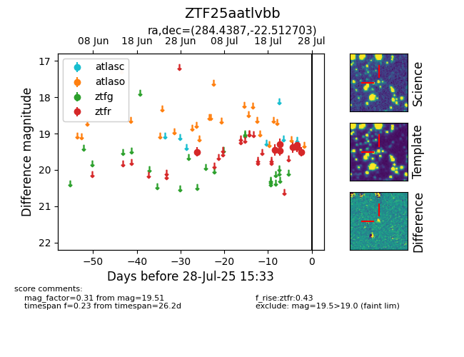

Target ZTF25aatlvbb at 2025-07-28 15:33, see:
FINK: fink-portal.org/ZTF25aatlvbb
Lasair: lasair-ztf.lsst.ac.uk/objects/ZTF25aatlvbb
ALeRCE: alerce.online/object/ZTF25aatlvbb
alt names
ZTF25aatlvbb (ztf,fink)
coordinates:
equatorial (ra, dec) = (284.4387,-22.51270)
galactic (l, b) = (13.3136,-11.37615)
photometry
last atlaso=nan, ztfr=19.51
1 atlaso, 8 ztfr detections
